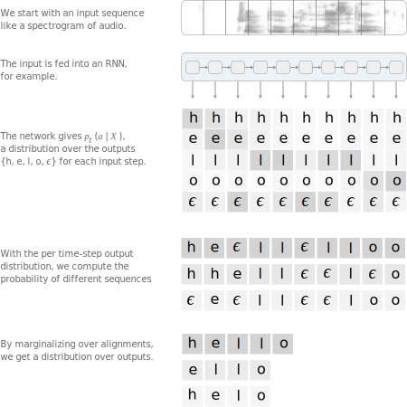

A visual guide to CTC, an algorithm used to train deep neural networks in
speech recognition, handwriting recognition and other sequence problems.
How CTC collapsing works
For an input, like speech
Predict a sequence of tokens
Use return to input a blank (\epsilon)
Merge repeats, drop \epsilonFinal output
Consider speech recognition. We have a dataset of audio clips and
corresponding transcripts. Unfortunately, we don't know how the characters in
the transcript align to the audio. This makes training a speech recognizer
harder than it might at first seem.
Without this alignment, the simple approaches aren't available to us. We
could devise a rule like "one character corresponds to ten inputs". But
people's rates of speech vary, so this type of rule can always be broken.
Another alternative is to hand-align each character to its location in the
audio. From a modeling standpoint this works well — we'd know the ground truth
for each input time-step. However, for any reasonably sized dataset this is
prohibitively time consuming.
This problem doesn't just turn up in speech recognition. We see it in many
other places. Handwriting recognition from images or sequences of pen strokes
is one example. Action labelling in videos is another.
Handwriting recognition: The input can be
(x,y) coordinates of a pen stroke or
pixels in an image.
Speech recognition: The input can be a spectrogram or some
other frequency based feature extractor.
Connectionist Temporal Classification (CTC) is a way to get around not
knowing the alignment between the input and the output. As we'll see, it's
especially well suited to applications like speech and handwriting
recognition.
To be a bit more formal, let's consider mapping input sequences
X = [x_1, x_2, \ldots, x_T], such as audio, to corresponding output
sequences Y = [y_1, y_2, \ldots, y_U], such as transcripts.
We want to find an accurate mapping from X's to Y's.
There are challenges which get in the way of us
using simpler supervised learning algorithms. In particular:
Both X and Y
can vary in length.
The ratio of the lengths of X and Y
can vary.
We don't have an accurate alignment (correspondence of the elements) of
X and Y.
The CTC algorithm overcomes these challenges. For a given X
it gives us an output distribution over all possible Y's. We
can use this distribution either to infer a likely output or to asses
the probability of a given output.
Not all ways of computing the loss function and performing inference are
tractable. We'll require that CTC do both of these efficiently.
Loss Function: For a given input, we'd like to train our
model to maximize the probability it assigns to the right answer. To do this,
we'll need to efficiently compute the conditional probability
p(Y \mid X). The function p(Y \mid X) should
also be differentiable, so we can use gradient descent.
Inference: Naturally, after we've trained the model, we
want to use it to infer a likely Y given an X.
This means solving
Y^* \enspace =\enspace {\mathop{\text{argmax}}\limits_{Y}} \enspace p(Y \mid X).
Ideally Y^* can be found efficiently. With CTC we'll settle
for an approximate solution that's not too expensive to find.
The Algorithm
The CTC algorithm can assign a probability for any Y
given an X. The key to computing this probability is how CTC
thinks about alignments between inputs and outputs. We'll start by looking at
these alignments and then show how to use them to compute the loss function and
perform inference.
Alignment
The CTC algorithm is alignment-free — it doesn't require an
alignment between the input and the output. However, to get the probability of
an output given an input, CTC works by summing over the probability of all
possible alignments between the two. We need to understand what these
alignments are in order to understand how the loss function is ultimately
calculated.
To motivate the specific form of the CTC alignments, first consider a naive
approach. Let’s use an example. Assume the input has length six and Y
= [c, a, t]. One way to align X and Y
is to have a character for each input step and collapse repeats.
input (X)
alignment
output (Y)
This approach has two problems.
Often, it doesn't make sense to force every input step to align to
some output. In speech recognition, for example, the input can have stretches
of silence with no corresponding output.
We have no way to produce outputs with multiple characters in a row.
Consider the alignment [h, h, e, l, l, l, o]. Collapsing repeats will
produce "helo" instead of "hello".
To get around these problems, CTC introduces a new token to the set of
allowed outputs. This new token is sometimes called the blank token. We’ll
refer to it here as \epsilon. The
\epsilon token doesn't correspond to anything and is simply
removed from the output.
The alignments allowed by CTC are the same length as the input. We allow any
alignment which maps to Y after merging repeats and removing
\epsilon tokens:
First, merge repeat characters.
Then, remove any \epsilon tokens.
The remaining characters are the output.
If Y has two of the same character in a row, then a valid
alignment must have an \epsilon between them. With this rule
in place, we can differentiate between alignments of [h, e, l, l, o] and
[h, e, l, o].
Let's go back to the output [c, a, t] with an input of length six. Here are
a few more examples of valid and invalid alignments.
The CTC alignment has a few notable properties. First, the allowed
alignments between X and Y are monotonic.
If we advance to the next input, we can keep the corresponding output the
same or advance to the next one. A second property is that the alignment of
X to Y is many-to-one. One or more input
elements can align to a single output element but not vice-versa. This implies
a third property: the length of Y cannot be greater than the
length of X.
Loss Function
The CTC alignments give us a natural way to go from probabilities at each
time-step to the probability of an output sequence.

To be precise, the CTC objective
for a single (X, Y) pair is:
p(Y \mid X) \;\; =
\sum_{A \in \mathcal{A}_{X,Y}}
\prod_{t=1}^T \; p_t(a_t \mid X)
The CTC conditional probabilitymarginalizes over the set of valid alignments
computing the probability for a single alignment step-by-step.
Models trained with CTC typically use a recurrent neural network (RNN) to
estimate the per time-step probabilities, p_t(a_t \mid X).
The RNN works well here since it accounts for context in the input, but we're
free to use any learning algorithm which produces a distribution over output
classes given a fixed-size slice of the input.
If we aren't careful, the CTC loss can be very expensive to compute. We
could try the straightforward approach and compute the score for each alignment
summing them all up as we go. The problem is there can be a massive number of
alignments.
For a Y of length U without any repeat
characters and an X of length T the size
of the set is {T + U \choose T - U}. For T=100 and
U=50 this number is almost 10^{40}.
For most problems this would be too slow.
Thankfully, we can compute the loss much faster with a dynamic programming
algorithm. The key insight is that if two alignments have reached the same
output at the same step, then we can merge them.
Summing over all alignments can be very expensive.
Dynamic programming merges alignments, so it's much faster.
Since we can have an \epsilon before or after any token in
Y, it's easier to describe the algorithm
using a sequence which includes them. We'll work with the sequence
Z \enspace =\enspace [\epsilon, ~y_1, ~\epsilon, ~y_2,~ \ldots, ~\epsilon, ~y_U, ~\epsilon]
which is Y with an \epsilon at
the beginning, end, and between every character.
Let's let \alpha be the score of the merged alignments at a
given node. More precisely, \alpha_{s, t} is the CTC score of
the subsequence Z_{1:s} after t input steps.
As we'll see, we'll compute the final CTC score, P(Y \mid X),
from the \alpha's at the last time-step. As long as we know
the values of \alpha at the previous time-step, we can compute
\alpha_{s, t}. There are two cases.
Case 1:
In this case, we can't jump over z_{s-1}, the previous
token in Z. The first reason is that the previous token can
be an element of Y, and we can't skip elements of
Y. Since every element of Y in
Z is followed by an \epsilon, we can
identify this when z_{s} = \epsilon. The second reason is
that we must have an \epsilon between repeat characters in
Y. We can identify this when
z_s = z_{s-2}.
To ensure we don't skip z_{s-1}, we can either be there
at the previous time-step or have already passed through at some earlier
time-step. As a result there are two positions we can transition from.
\alpha_{s, t} \; =
(\alpha_{s-1, t-1} + \alpha_{s, t-1}) \quad\quad \cdot
The CTC probability of the two valid subsequences after
t-1 input steps.
p_t(z_{s} \mid X)
The probability of the current character at input step t.
Case 2:
In the second case, we're allowed to skip the previous token in
Z. We have this case whenever z_{s-1} is
an \epsilon between unique characters. As a result there are
three positions we could have come from at the previous step.
\alpha_{s, t} \; =
(\alpha_{s-2, t-1} + \alpha_{s-1, t-1} + \alpha_{s, t-1}) \quad\quad \cdot
The CTC probability of the three valid subsequences after
t-1 input steps.
p_t(z_{s} \mid X)
The probability of the current character at input step t.
Below is an example of the computation performed by the dynamic programming
algorithm. Every valid alignment has a path in this graph.
output Y = [a, b]
input, X
Node (s, t) in the diagram represents
\alpha_{s, t} – the CTC score of
the subsequence Z_{1:s} after
t input steps.
There are two valid starting nodes and two valid final nodes since the
\epsilon at the beginning and end of the sequence is
optional. The complete probability is the sum of the two final nodes.
Now that we can efficiently compute the loss function, the next step is to
compute a gradient and train the model. The CTC loss function is differentiable
with respect to the per time-step output probabilities since it's just sums and
products of them. Given this, we can analytically compute the gradient of the
loss function with respect to the (unnormalized) output probabilities and from
there run backpropagation as usual.
For a training set \mathcal{D}, the model's parameters
are tuned to minimize the negative log-likelihood
\sum_{(X, Y) \in \mathcal{D}} -\log\; p(Y \mid X)
instead of maximizing the likelihood directly.
Inference
After we've trained the model, we'd like to use it to find a likely output
for a given input. More precisely, we need to solve
Y^* \enspace = \enspace {\mathop{\text{argmax}}\limits_{Y}} \enspace p(Y \mid X).
One heuristic is to take the most likely output at each time-step. This
gives us the alignment with the highest probability:
We can then collapse repeats and remove \epsilon tokens to
get Y.
For many applications this heuristic works well, especially when most of the
probability mass is alloted to a single alignment. However, this approach can
sometimes miss easy to find outputs with much higher probability. The problem
is, it doesn't take into account the fact that a single output can have many
alignments.
Here's an example. Assume the alignments [a, a, \epsilon]
and [a, a, a] individually have lower probability than [b, b, b]. But
the sum of their probabilities is actually greater than that of [b, b, b]. The
naive heuristic will incorrectly propose Y = [b] as
the most likely hypothesis. It should have chosen Y = [a].
To fix this, the algorithm needs to account for the fact that [a, a, a] and [a,
a, \epsilon] collapse to the same output.
We can use a modified beam search to solve this. Given limited
computation, the modified beam search won't necessarily find the
most likely Y. It does, at least, have
the nice property that we can trade-off more computation
(a larger beam-size) for an asymptotically better solution.
A regular beam search computes a new set of hypotheses at each input step.
The new set of hypotheses is generated from the previous set by extending each
hypothesis with all possible output characters and keeping only the top
candidates.
A standard beam search algorithm with an alphabet of
\{\epsilon, a, b\} and a beam size
of three.
We can modify the vanilla beam search to handle multiple alignments mapping to
the same output. In this case instead of keeping a list of alignments in the
beam, we store the output prefixes after collapsing repeats and removing
\epsilon characters. At each step of the search we accumulate
scores for a given prefix based on all the alignments which map to it.
The CTC beam search algorithm with an output alphabet
\{\epsilon, a, b\}
and a beam size of three.
A proposed extension can map to two output prefixes if the character is a
repeat. This is shown at T=3 in the figure above
where ‘a’ is proposed as an extension to the prefix [a]. Both [a] and [a, a] are
valid outputs for this proposed extension.
When we extend [a] to produce [a,a], we only want include the part of the
previous score for alignments which end in \epsilon. Remember, the
\epsilon is required between repeat characters. Similarly,
when we don’t extend the prefix and produce [a], we should only include the part
of the previous score for alignments which don’t end in \epsilon.
Given this, we have to keep track of two probabilities for each prefix
in the beam. The probability of all alignments which end in
\epsilon and the probability of all alignments which don’t
end in \epsilon. When we rank the hypotheses at
each step before pruning the beam, we'll use their combined scores.
The implementation of this algorithm doesn't require much code, but it is
dense and tricky to get right. Checkout this gist for an example implementation in Python.
In some problems, such as speech recognition, incorporating a language model
over the outputs significantly improves accuracy. We can include the language
model as a factor in the inference problem.
p(Y \mid X) \quad \cdot
The CTC conditional probability.
p(Y)^\alpha \quad \cdot
The language model probability.
L(Y)^\beta
The "word" insertion bonus.
The function L(Y) computes the length of
Y in terms of the language model tokens and acts as a word
insertion bonus. With a word-based language model L(Y)
counts the number of words in Y. If we use a character-based
language model then L(Y) counts the number of characters
in Y. The language model scores are only included when a
prefix is extended by a character (or word) and not at every step of the
algorithm. This causes the search to favor shorter prefixes, as measured by
L(Y), since they don't include as many language model
updates. The word insertion bonus helps with this. The parameters
\alpha and \beta are usually set by
cross-validation.
The language model scores and word insertion term can be included in the
beam search. Whenever we propose to extend a prefix by a character, we can
include the language model score for the new character given the prefix so
far.
Properties of CTC
We mentioned a few important properties of CTC so far. Here we’ll go
into more depth on what these properties are and what trade-offs they offer.
Conditional Independence
One of the most commonly cited shortcomings of CTC is the conditional
independence assumption it makes.
Graphical model for CTC.
The model assumes that every output is conditionally independent of
the other outputs given the input. This is a bad assumption for many
sequence to sequence problems.
Say we had an audio clip of someone saying “triple A”.
Another valid transcription could
be “AAA”. If the first letter of the predicted transcription is ‘A’, then
the next letter should be ‘A’ with high probability and 'r' with low
probability. The conditional independence assumption does not allow for this.
If we predict an 'A' as the first letter then the suffix 'AA' should get much
more probability than 'riple A'. If we predict 't' first, the opposite
should be true.
In fact speech recognizers using CTC don't learn a language model over the
output nearly as well as models which are conditionally dependent.
However, a separate language model can
be included and usually gives a good boost to accuracy.
The conditional independence assumption made by CTC isn't always a bad
thing. Baking in strong beliefs over output interactions makes the model less
adaptable to new or altered domains. For example, we might want to use a speech
recognizer trained on phone conversations between friends to transcribe
customer support calls. The language in the two domains can be quite different
even if the acoustic model is similar. With a CTC acoustic model, we can easily
swap in a new language model as we change domains.
Alignment Properties
The CTC algorithm is alignment-free. The objective function
marginalizes over all alignments. While CTC does make strong assumptions about
the form of alignments between X and Y, the
model is agnostic as to how probability is distributed amongst them. In some
problems CTC ends up allocating most of the probability to a single alignment.
However, this isn't guaranteed. We can force the model to choose a single
alignment by replacing the sum with a max in the objective function,
p(Y \mid X) \enspace = \enspace \max_{A \in \mathcal{A}_{X,Y}} \enspace \prod_{t=1}^T \; p(a_t \mid X).
As mentioned before, CTC only allows monotonic alignments. In
problems such as speech recognition this may be a valid assumption. For other
problems like machine translation where a future word in a target sentence
can align to an earlier part of the source sentence, this assumption is a
deal-breaker.
Another important property of CTC alignments is that they are
many-to-one. Multiple inputs can align to at most one output. In some
cases this may not be desirable. We might want to enforce a strict one-to-one
correspondence between elements of X and
Y. Alternatively, we may want to allow multiple output
elements to align to a single input element. For example, the characters
“th” might align to a single input step of audio. A character based CTC model
would not allow that.
The many-to-one property implies that the output can't have more time-steps
than the input.
If Y has r consecutive
repeats, then the length of Y must be less than
the length of X by 2r - 1.
This is usually not a problem for speech and handwriting recognition since the
input is much longer than the output. However, for other problems where
Y is often longer than X, CTC just won't
work.
CTC in Context
In this section we’ll discuss how CTC relates to other commonly used
algorithms for sequence modeling.
HMMs
At a first glance, a Hidden Markov Model (HMM) seems quite different from
CTC. But, the two algorithms are actually quite similar. Understanding the
relationship between them will help us understand what advantages CTC has over
HMM sequence models and give us insight into how CTC could be changed for
various use cases.
Let's use the same notation as before,
X is the input sequence and Y
is the output sequence with lengths T and
U respectively. We're interested in learning
p(Y \mid X). One way to simplify the problem is to apply
Bayes' Rule:
p(Y \mid X) \; \propto \; p(X \mid Y) \; p(Y).
The p(Y) term can be any language model, so let's focus on
p(X \mid Y). Like before we'll let
\mathcal{A} be a set of allowed of alignments between
X and Y. Members of
\mathcal{A} have length T.
Let’s otherwise leave \mathcal{A} unspecified for now. We'll
come back to it later. We can marginalize over alignments to get
p(X \mid Y)\; = \; \sum_{A \in \mathcal{A}} \; p(X, A \mid Y).
To simplify notation, let's remove the conditioning on Y, it
will be present in every p(\cdot). With two assumptions we can
write down the standard HMM.
p(X) \quad =
The probability of the input
\sum_{A \in \mathcal{A}} \; \prod_{t=1}^T
marginalizes over alignments
p(x_t \mid a_t) \quad \cdot
the emission probability
p(a_t \mid a_{t-1})
and the transition probability.
The first assumption is the usual Markov property. The state
a_t is conditionally independent of all historic states given
the previous state a_{t-1}. The second is that the observation
x_t is conditionally independent of everything given the
current state a_t.
The graphical model for an HMM.
Now we can take just a few steps to transform the HMM into CTC and see how
the two models relate. First, let's assume that the transition probabilities
p(a_t \mid a_{t-1}) are uniform. This gives
p(X) \enspace \propto \enspace \sum_{A \in \mathcal{A}} \enspace \prod_{t=1}^T \; p(x_t \mid a_t).
There are only two differences from this equation and the CTC loss function.
The first is that we are learning a model of X given
Y as opposed to Y given X.
The second is how the set \mathcal{A} is produced. Let’s deal
with each in turn.
The HMM can be used with discriminative models which estimate p(a \mid x).
To do this, we apply Bayes’ rule and rewrite the model as
p(X) \enspace \propto \enspace \sum_{A \in \mathcal{A}} \enspace \prod_{t=1}^T \; \frac{p(a_t \mid x_t)\; p(x_t)}{p(a_t)}
\quad\quad\quad\propto \enspace \sum_{A \in \mathcal{A}} \enspace \prod_{t=1}^T \; \frac{p(a_t \mid x_t)}{p(a_t)}.
If we assume a uniform prior over the states a and condition on all of
X instead of a single element at a time, we arrive at
p(X) \enspace \propto \enspace \sum_{A \in \mathcal{A}} \enspace \prod_{t=1}^T \; p(a_t \mid X).
The above equation is essentially the CTC loss function, assuming the set
\mathcal{A} is the same. In fact, the HMM framework does not specify what
\mathcal{A} should consist of. This part of the model can be designed on a
per-problem basis. In many cases the model doesn't condition on Y and the
set \mathcal{A} consists of all possible length T sequences from the
output alphabet. In this case, the HMM can be drawn as an ergodic state
transition diagram in which every state connects to every other state. The
figure below shows this model with the alphabet or set of unique hidden states
as \{a, b, c\}.
In our case the transitions allowed by the model are strongly related to
Y. We want the HMM to reflect this. One possible model could
be a simple linear state transition diagram. The figure below shows this with
the same alphabet as before and Y = [a, b]. Another commonly
used model is the Bakis or left-right HMM. In this model any
transition which proceeds from the left to the right is allowed.
Ergodic HMM: Any node can be either a starting or
final state.
Linear HMM: Start on the left, end on the right.
CTC HMM: The first two nodes are the starting
states and the last two nodes are the final states.
In CTC we augment the alphabet with \epsilon and the HMM model allows a
subset of the left-right transitions. The CTC HMM has two start
states and two accepting states.
One possible source of confusion is that the HMM model differs for any unique
Y. This is in fact standard in applications such as speech recognition. The
state diagram changes based on the output Y. However, the functions which
estimate the observation and transition probabilities are shared.
Let’s discuss how CTC improves on the original HMM model. First, we can think
of the CTC state diagram as a special case HMM which works well for many
problems of interest. Incorporating the blank as a hidden state in the HMM
allows us to use the alphabet of Y as the other hidden states. This model
also gives a set of allowed alignments which may be a good prior for some
problems.
Perhaps most importantly, CTC is discriminative. It models p(Y \mid
X) directly, an idea that's been important in the past with other
discriminative improvements to HMMs.
Discriminative training let's us apply powerful learning algorithms like the
RNN directly towards solving the problem we care about.
Encoder-Decoder Models
The encoder-decoder is perhaps the most commonly used framework for sequence
transduction with neural networks. This class of models consists of an encoder
and a decoder. The encoder maps the input sequence X into a
hidden representation. The decoder consumes the hidden representation and
produces a distribution over the outputs. We can write this as
\begin{aligned}
H\enspace &= \enspace\textsf{encode}(X) \\[.5em]
p(Y \mid X)\enspace &= \enspace \textsf{decode}(H).
\end{aligned}
The \textsf{encode}(\cdot) and
\textsf{decode}(\cdot) functions are typically RNNs. The
decoder can optionally be equipped with an attention mechanism. The hidden
state sequence H has the same number of time-steps as the
input, T. Sometimes the encoder subsamples the input. If the
encoder subsamples the input by a factor s then
H will have T/s time-steps.
We can interpret CTC in the encoder-decoder framework. This is helpful to
understand the developments in encoder-decoder models that are applicable to
CTC and to develop a common language for the properties of these
models.
Encoder: The encoder of a CTC model can be just about any
encoder we find in commonly used encoder-decoder models. For example the
encoder could be a multi-layer bidirectional RNN or a convolutional network.
There is a constraint on the CTC encoder that doesn't apply to the others. The
input length cannot be sub-sampled so much that T/s
is less than U.
Decoder: We can view the decoder of a CTC model as a simple
linear transformation followed by a softmax normalization. This layer should
project all T steps of the encoder output
H into the dimensionality of the output alphabet.
We mentioned earlier that CTC makes a conditional independence assumption over
the characters in the output sequence. This is one of the big advantages that
other encoder-decoder models have over CTC — they can model the
dependence over the outputs. However in practice, CTC is still more commonly
used in tasks like Speech Recognition as we can partially overcome the
conditional independence assumption by including an external language model.
Practitioner’s Guide
So far we've mostly developed a conceptual understanding of CTC. Here we’ll go
through a few implementation tips for practitioners.
Software: Even with a solid understanding of CTC, the
implementation is difficult. The algorithm has several edge cases and a fast
implementation should be written in a lower-level programming language.
Open-source software tools make it much easier to get started:
Baidu Research has open-sourced
warp-ctc. The
package is written in C++ and CUDA. The CTC loss function runs on either
the CPU or the GPU. Bindings are available for Torch, TensorFlow and
PyTorch.
Nvidia also provides a GPU implementation of CTC in
cuDNN versions 7 and up.
Numerical Stability: Computing the CTC loss naively is
numerically unstable. One method to avoid this is to normalize the
\alpha’s at each time-step. The original publication
has more detail on this including the adjustments to the gradient.
In practice this works well enough
for medium length sequences but can still underflow for long sequences.
A better solution is to compute the loss function in log-space with the
log-sum-exp trick
When computing the sum of two probabilities in log space use the identity
\log(e^a + e^b) = \max\{a, b\} + \log(1 + e^{-|a-b|})
Most programming languages have a stable function to compute
\log(1 + x) when
x is close to zero.
.
Inference should also be done in log-space using the log-sum-exp trick.
Beam Search: There are a couple of good tips to know about when
implementing and using the CTC beam search.
The correctness of the beam search can be tested as follows.
Run the beam search algorithm on an arbitrary input.
Save the inferred output \bar{Y} and the corresponding score \bar{c}.
Compute the actual CTC score c for \bar{Y} using the same input.
Check that \bar{c} \approx c with the former being no greater than the later.
As the beam size increases the inferred output \bar{Y} may change, but the two
numbers should grow closer.
A common question when using a beam search decoder is the size of the beam
to use. There is a trade-off between accuracy and runtime. We can check if the
beam size is in a good range. To do this first compute the CTC score for the
inferred output c_i. Then compute the CTC score for the ground
truth output c_g. If the two outputs are not the same, we
should have c_g \lt c_i. If c_i << c_g then
the ground truth output actually has a higher probability under the model and
the beam search failed to find it. In this case a large increase to the beam
size may be warranted.
Bibliographic Notes
The CTC algorithm was first published by Graves et al. in 2006.
The first experiments were on TIMIT,
a popular phoneme recognition benchmark.
Chapter 7 of Graves’ thesis also gives a
detailed treatment of CTC.
One of the first applications of CTC to large vocabulary speech recognition was
by Graves et al. in 2014.
They combined a hybrid DNN-HMM and a CTC trained model to achieve state-of-the-art results.
Hannun et al. subsequently demonstrated state-of-the-art CTC based speech
recognition on larger benchmarks.
A CTC model outperformed other methods on an online handwriting
recognition benchmark in 2007.
CTC has been used successfully in many other problems. Some examples are
lip-reading from video, action recognition from
video and keyword detection in audio.
Many extensions and improvements to CTC have been proposed. Here are a few.
The Sequence Transducer discards the conditional independence assumption
made by CTC. As a consequence, the
model allows the output to be longer than the input. The Gram-CTC model
generalizes CTC to marginalize over n-gram output classes.
Other works have generalized CTC or proposed
similar algorithms to account for segmental structure in the output.
The Hidden Markov Model was developed in the 1960’s with the first application
to speech recognition in the 1970’s. For an introduction to the HMM and
applications to speech recognition see Rabiner's canonical tutorial.
Encoder-decoder models were developed in 2014.
Distill has an
in-depth guide to attention in encoder-decoder
models.
Acknowledgments
I'm especially grateful to the Distill team for dramatically
improving the quality of this article. Thanks to Chris Olah's suggestions and
feedback, both the written and visual content of the article are
substantially better. Thanks to Shan Carter for substantial improvements to
the figures, and thanks to Ludwig Schubert for help with the Distill
template.
Thanks to Sanjeev Satheesh, Chris Lengerich, Dan Jurafsky and the
anonymous reviewers for their feedback. I'm also very grateful to Andrew Ng
for feedback on the article and his support.